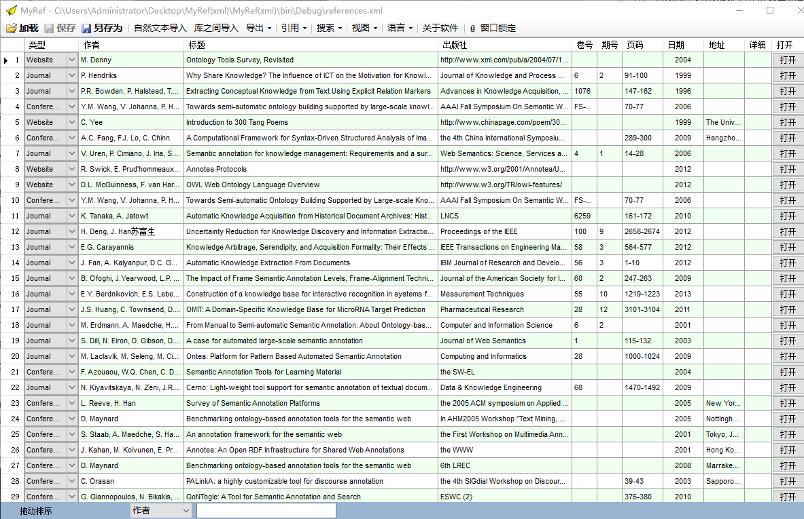
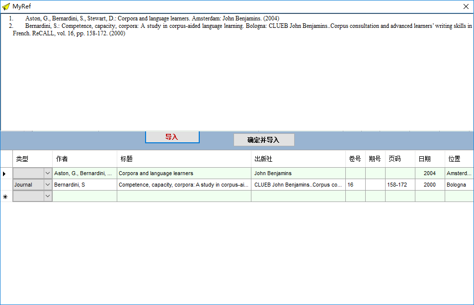
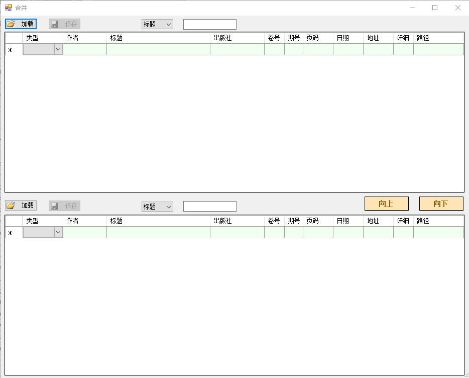
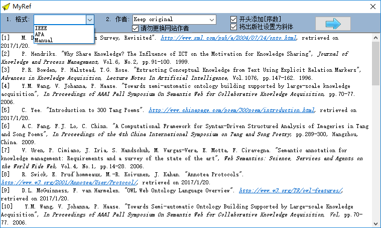
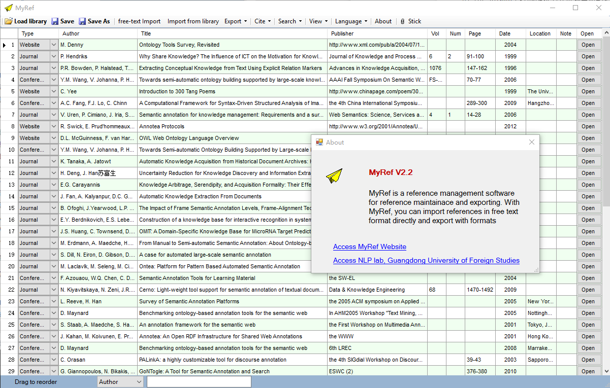

在未借助任何软件的情况下，论文撰写者只能手动输入，现有许多参考文献管理系统也要求使用者将信息一点点录入。这样的信息处理工作量大，容易出错，容易丢失，且不易查找，缺乏系统性和规范性。个人参考文献管理系统可通过对参考文献资料统一而整齐地进行管理，以方便使用者调用和查阅，从而实现人性化、简单化的管理，节约时间和精力。
MyRef可以通过满足以下需求从而实现对参考文献的科学化管理：
1）导入多种格式参考文献，智能自动分析参考文献自由文本并导入；
2）对参考文献进行数据管理，按照不同字段如Author，Title，Publisher等对记录进行添加、修改、删除及拖动排序等；
3）用户对Note字段添加读书心得或重点笔记，方便以后写文章时直接调用；
4）通过输入不同字段信息进行记录查找；
5）将录入的参考文献分门别类建立参考文献文档，方便以后调用；
6）输出多种兼容通用参考文献格式如IEEE、APA，并允许用户自定义输出格式，同时有其他文字样式的选择；
7）允许将参考文献以doc，xls，及htm格式输出；
8）直接将参考文献与谷歌学术、百度学术相关联，一键验证参考文献出处；
9）与word等字处理软件无缝对接，通过将欲引用的文献记录直接插入到自己正在编辑的word文档中，形成规范的引用，并在论文末尾自动生成相应的参考文献目录索引。




